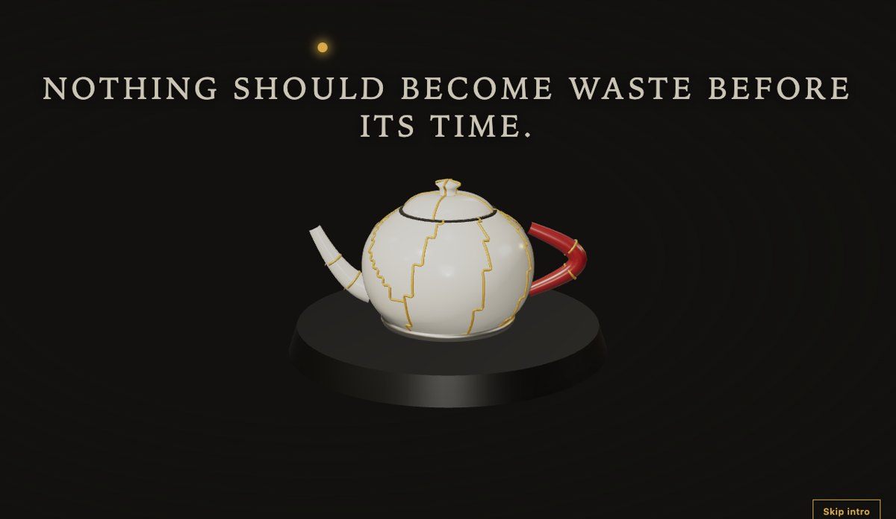
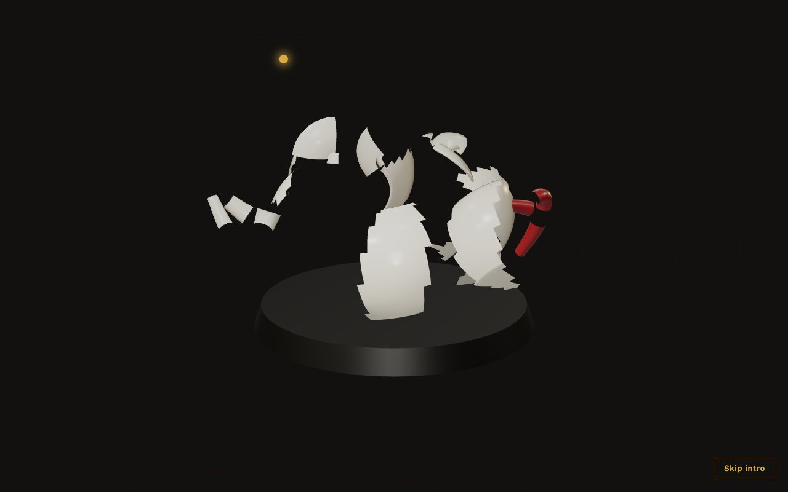
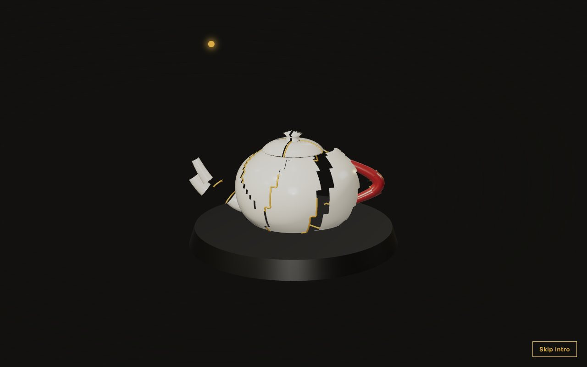
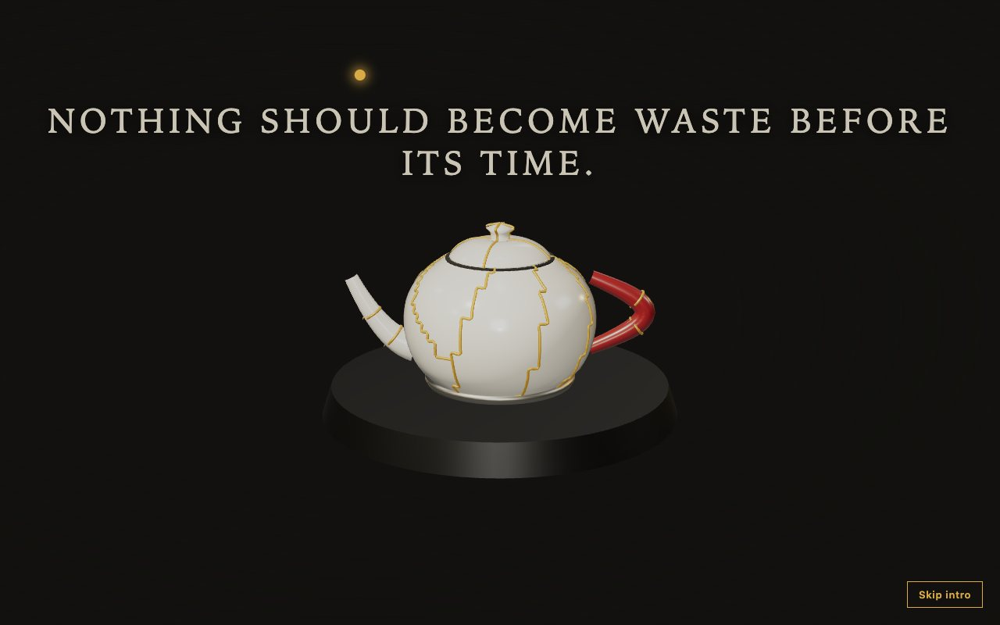
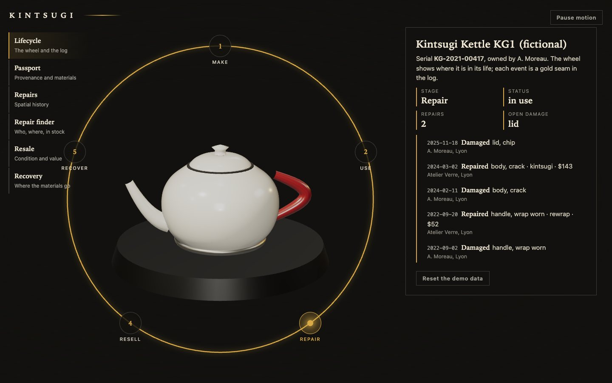
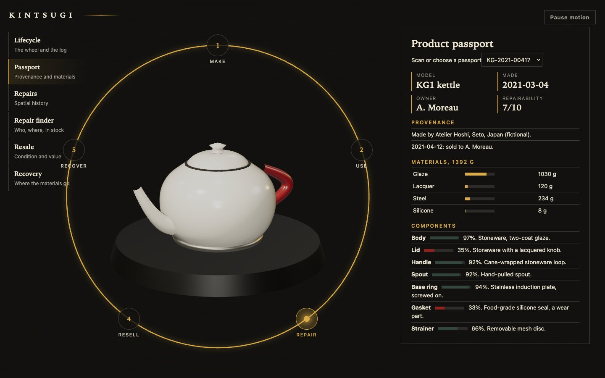
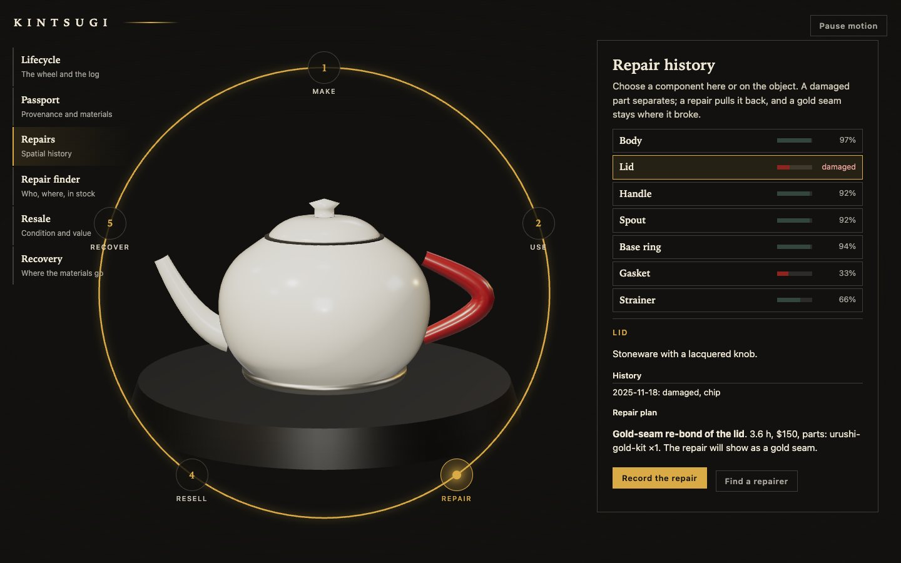
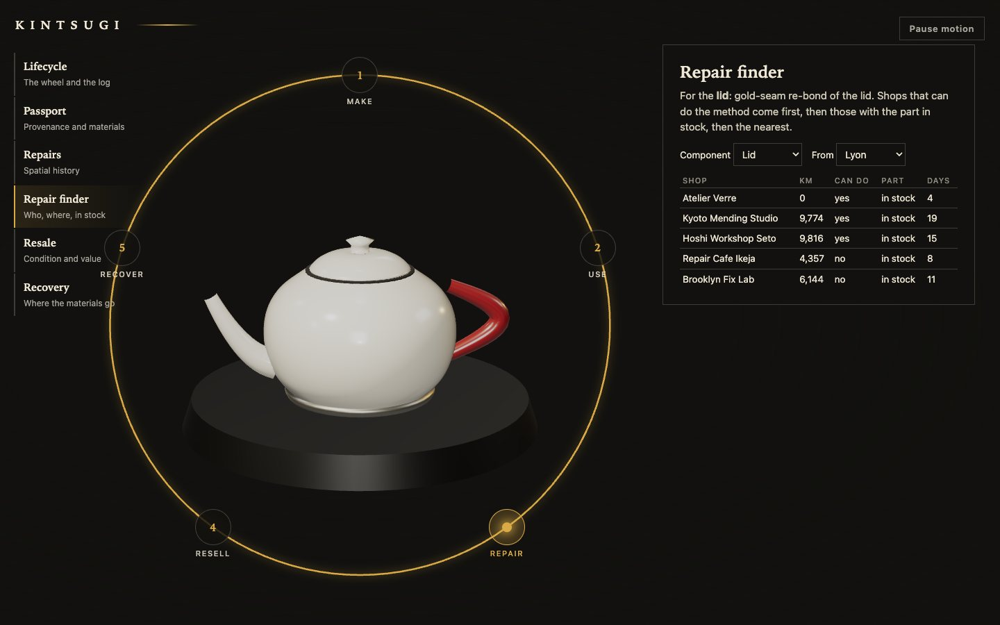
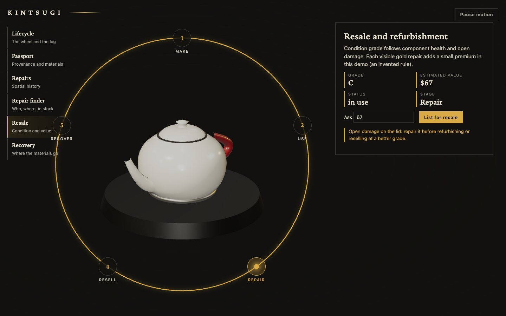
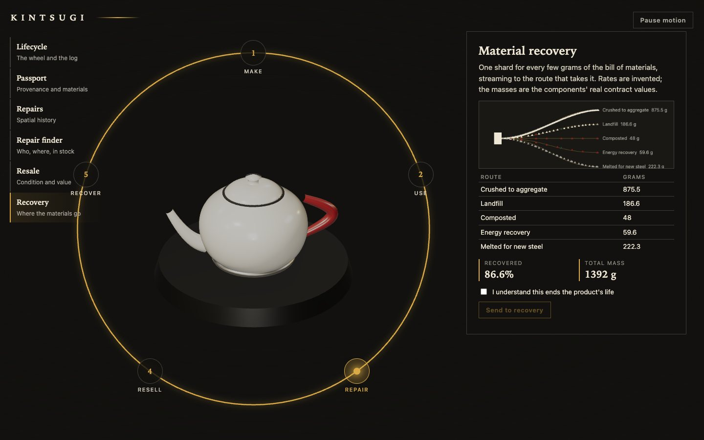

Blender · three.js · product lifecycle · 2026-10
What If a Repair Were the Most Valuable Part of the Product?
A lifecycle passport for a synthetic ceramic kettle: a gold-seam repair of its chipped lid takes the resale estimate from $67 (grade C) to $91 (grade B) and its repairability index from 7 to 8.3. The kettle is 20 scripted Blender shards that shatter, reassemble with 27 gold seams, and become a make, use, repair, resell, recover wheel.

Built from blueprint 06 of a written build book (Advanced Engineering Build Book, Volume VII) as one vertical slice. The kettle, its owners, repair shops, prices, grades and material routes are all synthetic, and the lifecycle rules, resale formula and recovery routes are invented for the demo. Not built: PostgreSQL (JSON plus localStorage), QR scanning (a select stands in), a repair marketplace and payments, authentication, real product data, touch testing beyond a phone layout, and a measurement on a physical GPU. The twelve agent roles are committed as Claude Code configuration, but this repository was produced by one session playing them in sequence, not by parallel subagents.
01 — The problem
A product passport is usually a table of facts. The question here is whether the object itself can carry its history: when a part breaks, the break should be geometry, and when it is repaired, the repair should stay visible where it happened. Can the same event log drive a 3D kettle, a lifecycle wheel and an API without any of them disagreeing?
The book's rule for this volume is that Blender owns the shape and the browser owns the behaviour, so the shards, their origins and the seams between them have to be promised by a contract strong enough for springs and shaders to do the rest.
02 — What I built
One repository with the asset pipeline, the lifecycle rules and the passport.
- A scripted kettle: seven components split into 20 shards that tile the intact surface exactly, with 27 seams, 14,844 triangles in 299 KB, validated by re-import.
- A state machine over an append-only event log, so an illegal history cannot be recorded, plus repair planning, health, resale value, material flows and a distance-ranked repair finder.
- One view function shared by the interface and the API.
- Six views: lifecycle wheel, passport, repairs, repair finder, resale and recovery.
- An API with idempotent repair, transfer, damage, listing and recycling events.
03 — How it was built
- 01
Shards that tile the surface
Blender partitions the kettle's triangles among seed points (the nearest seed wins), so every triangle belongs to exactly one shard and the shards fit back together with no gap. The validator re-imports the GLB and checks that the shards add up to the intact component and that each origin sits at its shard's centroid, so a shard can spin about its own middle.
- 02
A history that cannot be illegal
The lifecycle is a small state machine: a product is listed only when in use, handed over only when listed, refurbished only when every open damage is repaired, and never recycled twice. Events must be in time order. A stored history is replayed on load and the first illegal event is reported.
listed: (s) => s === "in_use" ? null : "only a product in use can be listed for resale" - 03
The break is the data
The hero kettle's lid has an open chip. Selecting it separates the lid's shards and shows the red crack; the plan is a gold-seam re-bond of 3.6 hours and $150. Recording the repair pulls the shards home, removes the crack and leaves a gold seam, and the passport's numbers move with it: grade C to B, resale estimate $67 to $91, repairability 7 to 8.3.
- 04
One view function
The wheel, the tables and the API's JSON are all produced by
passportView, so they cannot disagree. - 05
An intro that was invisible once
The intro runs about 18 seconds: a perfect kettle, a fall, a shatter, silence, reassembly with gold, a one-line statement, and gold seams that draw the lifecycle wheel. A bug in the previous blueprint, where an unmounted timeline left the interface at opacity 0, led to a check here that the finished HUD has computed opacity 1, and to running the real intro unattended to its end.
04 — Results
The intro: the kettle shatters, reassembles with gold, and the seams become the wheel.



The passport:






The numbers. The hero kettle KG-2021-00417 (grade C, $67, repairability 7) has an open lid chip. After the 3.6 h, $150 gold-seam repair it is grade B, $91, repairability 8.3, with no open damage and three repairs on record. At end of life, 86.6 percent of its 1,392 g is recovered: 875.5 g crushed to aggregate, 222.3 g melted for new steel, 59.6 g to energy recovery and 48 g composted, with 186.6 g to landfill.
Checks. 31 unit and API tests, 23 Playwright tests that passed three times in a row after the last fix, a clean typecheck. They cover the demo script, persistence across reload, the repair finder's ordering, reduced motion, graphics failure, context loss, a phone width and six visual-regression states.
Performance, measured on an Apple M3 Pro with software WebGL, not a GPU. 8 draw calls and 8,004 triangles in the lifecycle view, 517 KB transferred, a 299 KB model. Software rendering gave a 5.6 s largest contentful paint and a median 33.3 ms frame (p95 50 ms); there is no 60 fps claim here.
05 — What I'd do next
- Run the performance script on a physical GPU and a phone, and move model decoding off the main thread.
- Replace the select box with real QR scanning and the JSON files with a database.
- Let a repairer, not only the owner, add events, with signed entries.
- Derive material routes from a real bill of materials.